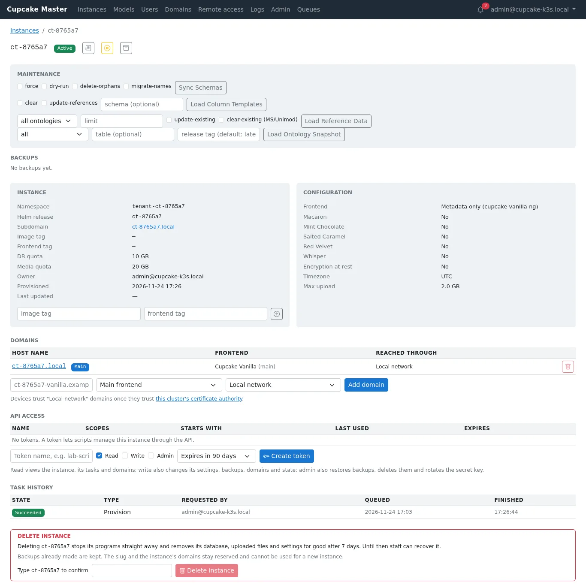
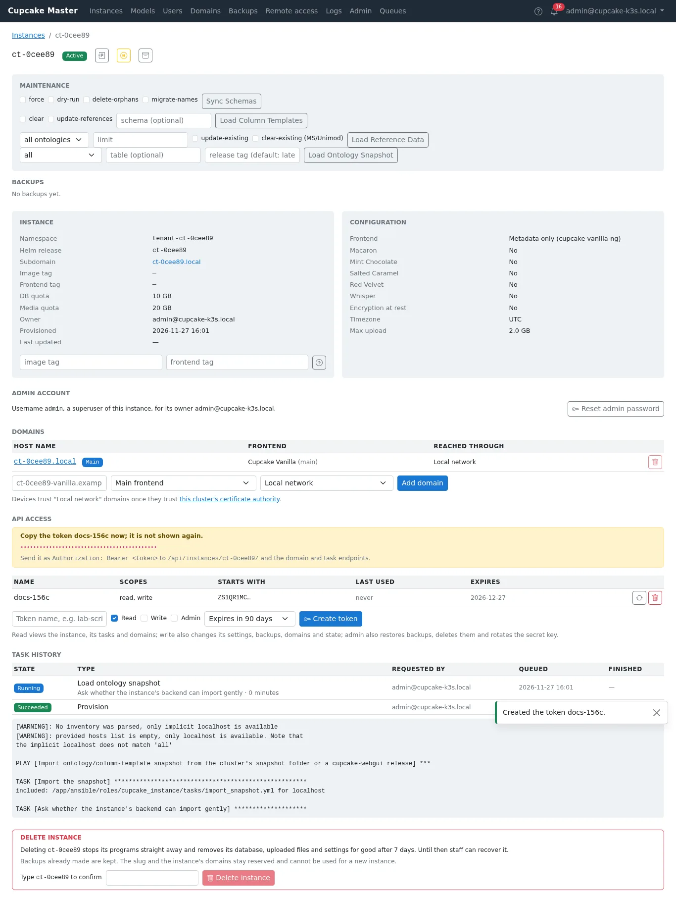
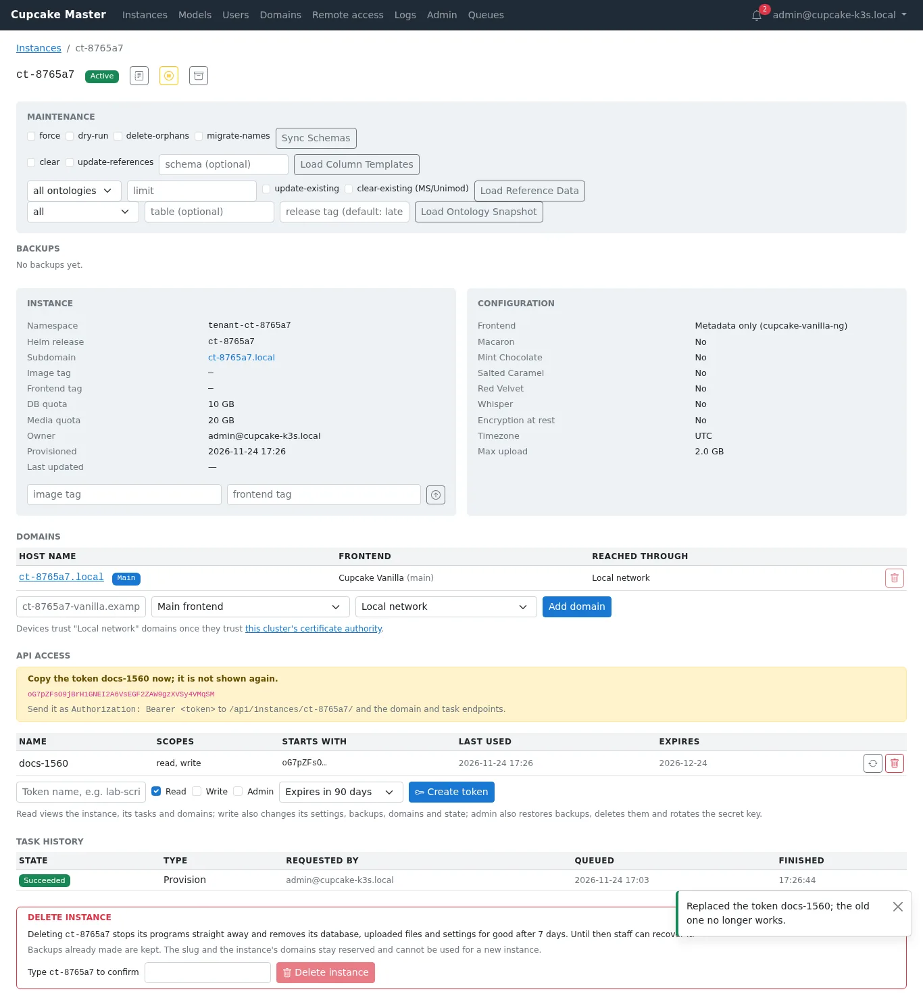
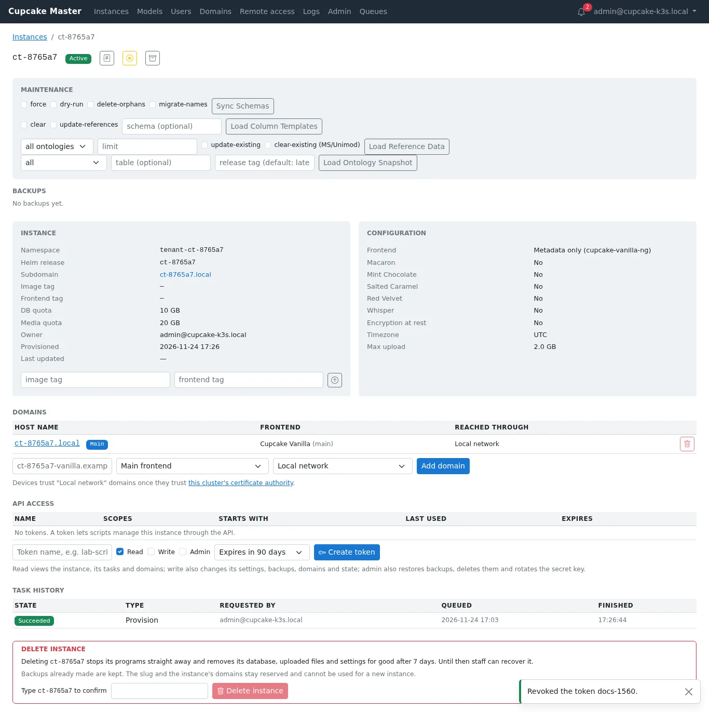

A token lets a script manage one instance through cupcake-master's API, as the instance's owner, without staff powers. Tokens are made on the instance's page under API access.

Creating a token
Name the token, choose what it may do and when it expires, then choose Create token.
| Scope | Allows |
|---|---|
| Read | Seeing the instance, its tasks and its domains |
| Write | Also changing its settings, images, domains, backups and state |
| Admin | Also restoring and deleting backups, rotating its secret key and resetting its admin password |
The token is shown once. Copy it straight away and send it as Authorization: Bearer <token>.

Replacing and revoking
Replace the token gives a new one, shown once; the old one stops working at once.

Revoke removes it.

A token stops working when it expires, is revoked, or its owner's account is suspended. An instance has at most 10 tokens.